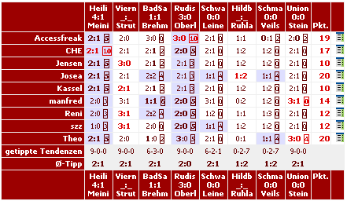

Tippspiel
 Im LMO 4 ist ein umfangreiches umd sehr flexibles Tippspiel integriert. Es basiert auf dem Tippspieladdon für den LMO 3 von Frank Albrecht.
Auswertung
Hier werden die tippbaren Ligen ausgewertet, das heißt jedem Tipper werden seine erreichten Punkten gutgeschrieben. Es kann jede Liga und jeder Spieltag einzeln gewertet werden, es ist aber auch möglich alle Spieltage einer bestimmten Liga auszuwerten.
Falls mehrere Ligen getippt werden, kann auch die Gesamtwertung hier aktualisiert werden.
Ebenso können Sie hier die Tippeinsichten erstellen und aktualisieren. Damit können Ihre Mitspieler sehen, wie die Konkurrenten getippt haben, ja nach Einstellung in den Optionen auch erst, nachdem der Spieltag abgelaufen ist.[nach oben]
Newsletter/Reminder
Hier haben Sie die Möglichkeit, Ihren Tippern verschiedene Nachrichten zukommen zu lassen, einen Newsletter an alle Tipper, persönliche Mails an Mitspieler und einen Tippreminder , der die Tipper an ihre Tippabgabe erinnern soll.
Es gibt verschiedene Platzhalter, die beim Mailversand durch deren Entsprechnung ersetzt werden.
- [nick]
- Nickname des jeweiligen Tippers
- [pass]
- Nickname des jeweiligen Tippers
- [name]
- Der richtige Name des Tippers
- [spiele]
- Dieser Paltzhalter ist nur im Tippreminder aktiv, er listet alle zu tippenden Spiele im angegebenen Zeitraum auf.
Userverwaltung
Hier verwalten Sie die Teilnehmer des Tippspiels, sie können selbst neue Tipper anlegen, Tipper editieren und Tipper löschen. Für jeden Tipper sind alle wichtigen Details änderbar:
- Persönliche Daten
- Passwort, Namen, Adresse, Mail
- Ist der Tipper gesperrt/freigeschaltet?
- Mailabonnements
- Soll der Tipper den Newsletter oder den Reminder erhalten?
- Team
- In welchem Team spielt der Tipper? (nur bei aktivierter Teamoption)
- abonnierte Ligen
- Welche Ligen kann der Tipper tippen?
Optionen
Die ist der umfangreichste und wichtigste Punkt des Tippspiels. Sie sollten die Optionen vor dem Start des Tippspiels einmal komplett einstellen und während des Tippspieles nicht mehr wesentlich verändern.
- Tippmodus
- Hier wählen Sie, ob ein Ergebnis oder nur die Tendenz (gewonnen, unentschieden, verloren) getippt werden soll.
- Pfade
- Hier steht der Pfad, in dem das Tippspiel seine Daten speichert. Die Grundeinstellung ist /tipps. Diese sollten Sie nicht ohne guten Grund ändern.
- Punkteverteilung
- Hier wird die Punktevergabe für das Tippspiel konfiguriert. Je nach Tippmodus sind unterschiedliche Einstellungen möglich, im Tendenzmodus gibt es naturgemäß weniger Einstellungsmöglichkeiten.
- Anzeigen
- Die Punkte die hier aktiviert sind, werden beim Tippspiel in der Navigationsleiste angezeigt.
- Regeltechnisches
- Hier können Sie mehrere grundlegende Sachen für das Tippspiel einstellen. Sie können den Tippabgabeschluss konfigurieren, maximale Teamgrößen festlegen und einstellen, wieviele Tage im Voraus getippt werden darf. Weiterhin können Sie hier den Jokertipp aktivieren, dabei haben die Tipper die Möglichkeit, ein Spiel pro Spieltag festzulegen, in dem ein Tipp mehr Punkte als normalerweise wert ist. Den entsprechenden Multiplikationsfaktor können Sie hier festlegen.
- Anmeldung
- Hier legen Sie die Anmeldemodalitäten fest. Sie können bestimmen, welche Angaben die Tipper bei der Anmeldung für das Tippspiel machen müssen, ob die Tipper ihre Anmeldung per Mail vervollständigen müssen (praktisch zur Verifizierung der angegebenen Mailadresse), ob Sie im Falle einer Neuanmeldung eine Benachrichtigung haben möchten und ob neue Tipper erst von Ihnen freigeschaltet werden müssen.
- Tippabgabe
- Hier konfigurieren Sie das Aussehen der Tippabgabe. Im
Ergebnismodus können Sie Pfeile anzeigen
lassen, um das Ergebnis ähnlich wie im Ergebniseditor ohne
Tastatur einstellen zu können. Um dem Tipper Anhaltspunkte
über bereits erfolgte Tipps zu geben, können Sie hier
die bereits getippten Tendenzen und
Durchschnittstipps anzeigen lassen.
- Es gibt zwei Möglichkeiten, wie die Tipper ihre Tipps abgeben können, Ligenweise oder Datumsweise. Bei der ersten Variante wird pro Liga und pro Spieltag getippt, die zweite Variante gruppiert alle Spiele (auch mehrerer Ligen), die innerhalb des angegebenen Zeitraums stattfinden. Falls Sie beide Varianten deaktivieren, ist keine Tippabgabe möglich.
- Zusätzlich können Sie hier einstellen, ob bei der Tippabgabe eine automatische Aktualisierung der Tippeinsichten stattfinden soll.
- Es gibt zwei Möglichkeiten, wie die Tipper ihre Tipps abgeben können, Ligenweise oder Datumsweise. Bei der ersten Variante wird pro Liga und pro Spieltag getippt, die zweite Variante gruppiert alle Spiele (auch mehrerer Ligen), die innerhalb des angegebenen Zeitraums stattfinden. Falls Sie beide Varianten deaktivieren, ist keine Tippabgabe möglich.
- Tippeinsicht
- Hier stellen Sie ein, wann die Tippeinsicht angezeigt werden soll. Entweder sofort nach der Eingabe des Tipps, nach Tippabgabeschluss oder erst nach der Eingabe der Ergebnisse. Weiterhin bestimmen Sie hier, wieviele Tipper auf einer Seite der Tippeinsicht dargestellt werden sollen.
- Tipp-Tabelle
- An Hand der Tipps der User errechnet das Tippspiel eine Tabelle für jeden User. Hier besteht die Möglichkeit eine Tipp-Tabelle aller User oder eine Tipp-Tabelle nach eingebrachten Punkten zu veröffentlichen.
- Punktestandtabellen
- Hier konfigurieren Sie das Aussehen der Punktestandsanzeige. Sie können entweder nur die Gesamtwertung anzeigen lassen (falls Sie eine Gesamtwertung führen) oder auch zusätzlich dazu für jede Liga eine einzelne Wertung. Weiterhin können Sie bestimmen, welche persönlichen Daten Ihrer Tipper Sie hier veröffentlichen wollen. Dazu zählen die Anzeige des Realnamens, des Nicknamens und/oder der Mailadresse. Zusätzlich bestimmen Sie hier, wie ausführlich die Aufschlüsselung der erreichten Punkte angezeigt werden soll.
- Was zählt bei Punktgleichheit?
- Hier haben Sie die Möglichkeit, so genannte Tie-Breaker zu setzen. Wenn also zwei Tipper punktgleich sind, können Sie hier drei weitere Kriterien angeben, nach denen in absteigender Reihenfolge entschieden wird.
- Zusätzliche Auswertungen
- Hier stellen Sie ein, was bei der Eingabe der Ligaergebnisse für das Tippspiel zusätzlich ausgewertet werden soll. Bei Aktivierung dieser Punkte ist die manuelle Aktualisierung nicht mehr nötig, bei sehr vielen Mitspielern kann es allerding zu Problemen mit der Laufzeit kommen, da dieser Schritt sehr rechenintensiv ist.
- Tippbare Ligen
- Hier geben Sie die Ligen frei, welche von den Tippern abonniert werden können. Sie haben die Möglichkeit, alle vorhandenen Ligen freizugeben oder nur einzelne Ligen. Nur Ligen, die freigegeben sind, können von den Mitspielern getippt werden.